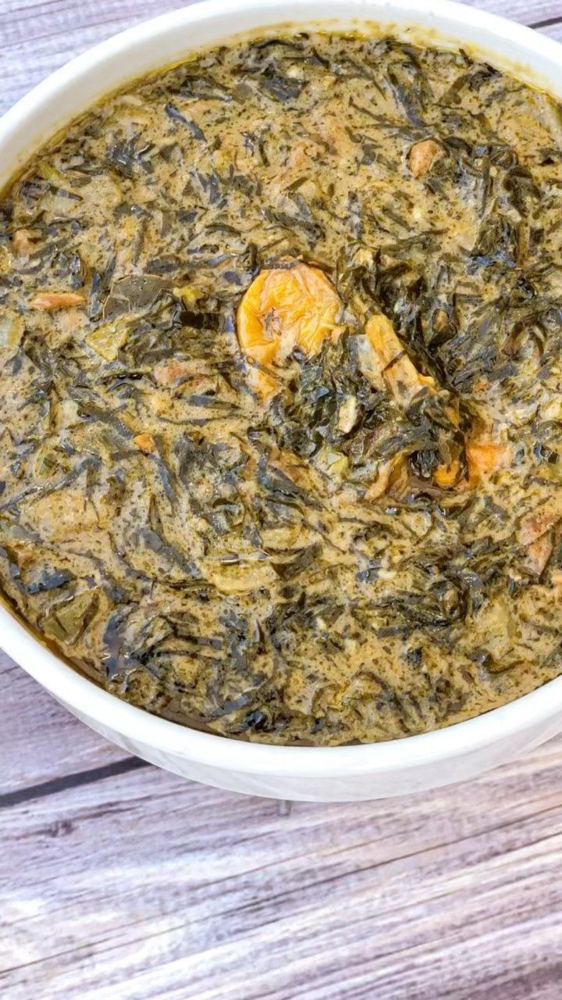

fumbwa
Le fumbwa est un plat riche et nutritif, apprécié pour ses saveurs profondes et ses textures variées. Les
feuilles de fumbwa apportent une texture unique à la sauce, qui se marie bien avec les arachides et les
protéines utilisées.
Ingrédients :
- 500 g de feuilles de fumbwa (gnetum africanum)
- 1 kg de viande (bœuf, chèvre, ou poulet) ou de poisson fumé
- 1 tasse d'arachides (cacahuètes) moulues
- 2 oignons
- 3 tomates
- 3 gousses d'ail
- 1 poivron vert
- 1 piment (facultatif)
- 2 cuillères à soupe d'huile de palme rouge ou d'huile de votre choix
- Sel et poivre au goût
- 1 cube de bouillon (facultatif)
- 4 tasses d'eau
Instructions
- Lavez soigneusement les feuilles de fumbwa et coupez-les en morceaux moyens.
- Faites bouillir les feuilles de fumbwa dans de l'eau pendant environ 15 à 20 minutes pour les attendrir.
Égouttez et réservez.
- Si vous utilisez de la viande, nettoyez et coupez-la en morceaux. Faites cuire la viande dans une
casserole avec un peu d'eau, du sel, du poivre, et un cube de bouillon jusqu'à ce qu'elle soit tendre.
Réservez.
- Si vous utilisez du poisson fumé, nettoyez-le et coupez-le en morceaux.
- Hachez finement les oignons, les tomates, le poivron, l'ail, et le piment (si utilisé).
- Dans une grande marmite, faites chauffer l'huile de palme à feu moyen.
- Ajoutez les oignons et l'ail, et faites revenir jusqu'à ce qu'ils soient translucides.
- Ajoutez les tomates, le poivron, et le piment, et faites revenir quelques minutes jusqu'à ce que les
légumes soient tendres.
- Ajoutez les arachides moulues aux légumes et mélangez bien. Faites cuire en remuant constamment pendant
quelques minutes pour permettre aux arachides de libérer leur huile naturelle et d'épaissir la sauce.
- Ajoutez les feuilles de fumbwa cuites à la marmite et mélangez bien.
- Ajoutez la viande cuite ou le poisson fumé à la sauce et mélangez bien.
- Versez l'eau dans la marmite et mélangez bien pour obtenir une consistance homogène.
- Laissez mijoter à feu doux pendant environ 30 à 45 minutes, en remuant de temps en temps. La sauce doit
épaissir et les saveurs doivent bien se mélanger.
- Goûtez et ajustez l'assaisonnement avec du sel et du poivre selon votre goût.
- Servez le fumbwa chaud, accompagné de riz, de fufu, de bananes plantains, ou de manioc.